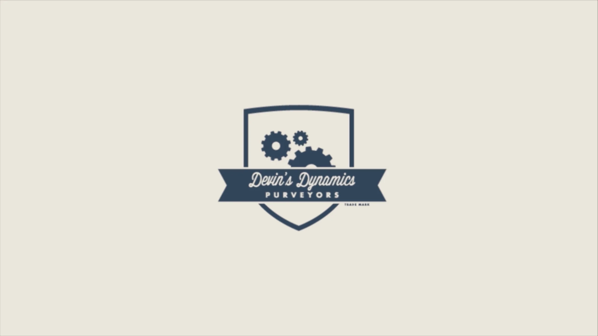
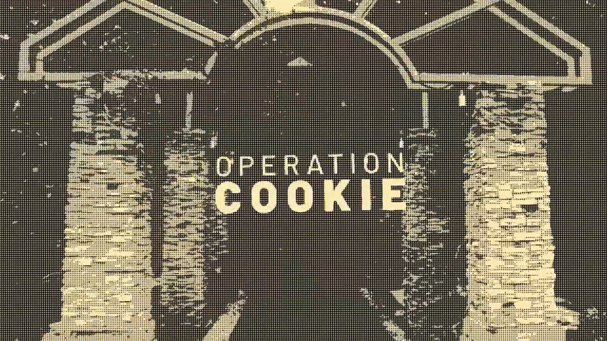

Motion Reel
After Effects · Illustrator · 2026
Brand identity animation, type moving through space, and pacing that follows the beat. Every transition is timed to keep things moving.
After Effects and Illustrator, with a lot of attention on easing curves, kinetic type, logos that morph, and cuts that follow the audio.
Styleframes

Logo build
A logo pieced together, part by part, with continual movement.

Video in 3D space
Video mapped onto surfaces in 3D space in After Effects.
From the animatic
I storyboarded it first, then cut an animatic: a rough pass of still frames to get the timing right before anything moved smoothly. The glow and light effects came last. These four frames are from that animatic stage.
- 01
The bike draws in
Lines of light trace out the bike.
- 02
The race
Two riders from above, blocking out where the trails go.
- 03
The type
The letters, built from the same lines as the bikes.
- 04
The logo lands
Where everything settles: the logo, in cool blue.

Olly